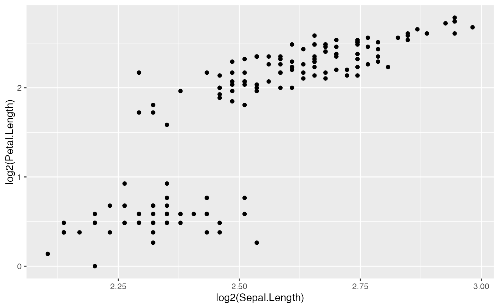

Create aes mapping to make programming easy with ggplot2.
Examples
# Simple aes creation
create_aes(list(x = "Sepal.Length", y = "Petal.Length"))
#> Aesthetic mapping:
#> * `x` -> `Sepal.Length`
#> * `y` -> `Petal.Length`
# Parse an expression
x <- "log2(Sepal.Length)"
y <- "log2(Petal.Length)"
create_aes(list(x = x, y = y), parse = TRUE)
#> Aesthetic mapping:
#> * `x` -> `log2(Sepal.Length)`
#> * `y` -> `log2(Petal.Length)`
# Create a ggplot
mapping <- create_aes(list(x = x, y = y), parse = TRUE)
ggplot(iris, mapping) +
geom_point()
